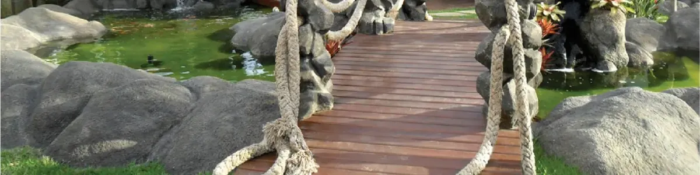
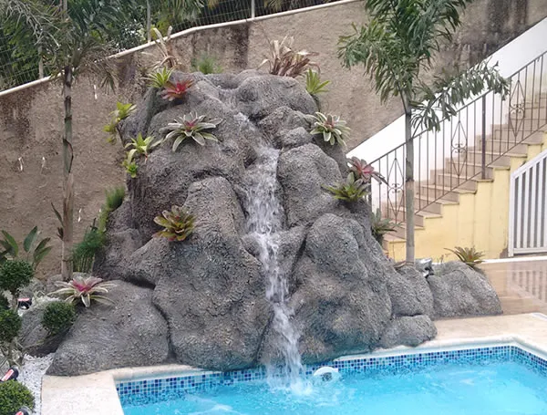
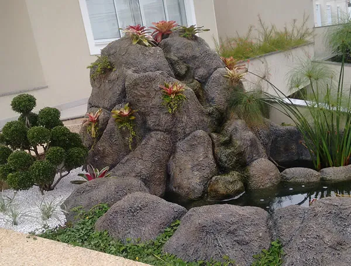
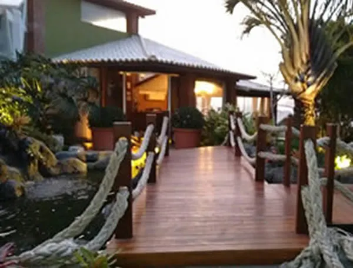
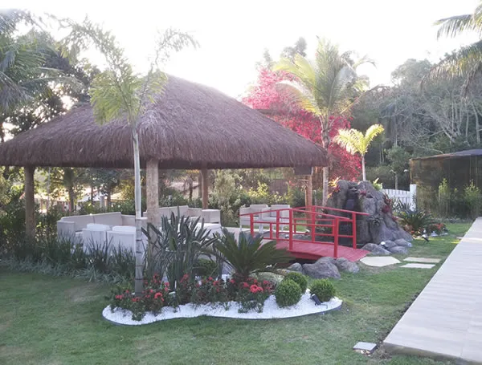
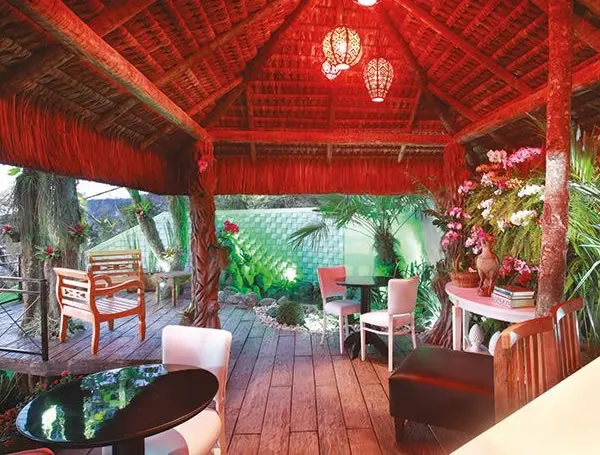
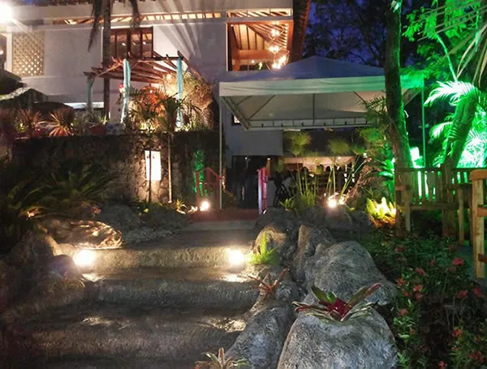
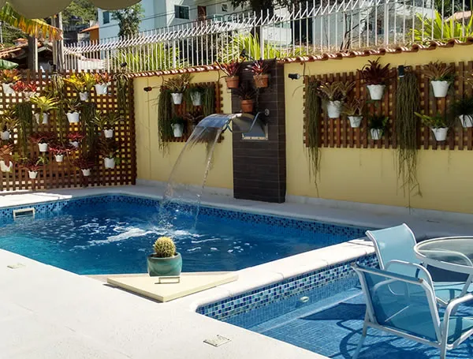

Jardins
Criamos ou modificamos seu jardim.
Ter a natureza por perto realmente faz uma grande diferença na vida das pessoas.
A Vida e Arte Paisagismo é uma empresa que prima pela execução de projetos personalizados, conduzidos por um atendimento único. Paisagismo e decoração na criação de painéis, lagos, cascatas e jardins — e uma loja de plantas, vasos, pedras e aquarismo, em Itaipú, Niterói.

Portfólio
Profissionais qualificados e com muita experiência para execução dos projetos. Cada peça abaixo leva o nome que a própria Vida e Arte deu a ela.

Cascata na piscina

Cascata no lago artificial

Paisagismo em hotéis

Espaço zen

Quiosque de piaçava

Jardim, iluminação e pedras artificiais

Jardim vertical e deck
Projetos
Criamos ou modificamos seu jardim.

Jardim vertical e deck de madeira, um dos últimos serviços realizados.

Pode ser feito em vários tamanhos e formatos diferentes.
Painéis de madeira, polietileno, ferro, alumínio, pedra porosa ou resina.
O quiosque de piaçava é um dos projetos já entregues pela equipe.
Realizamos locação de vasos e plantas para eventos. Temos vários modelos de vaso e espécies de plantas, para áreas externas e internas. Entre em contato conosco e faça um orçamento.
Realizamos todos os tipos de projetos de paisagismo. Transformamos seu sonho em realidade.
Serviço
Utilizamos fotorrealismo com imagens digitalizadas para pré-visualização do projeto. Visualize seu projeto antes da execução através de arte gráfica.


Este é o par de “Projetos antes e depois” que a Vida e Arte publica: o gazebo, a ponte, as carpas e as plantas são desenhados por cima da fotografia do terreno, para o cliente decidir antes da obra começar.
Serviços
Profissionais qualificados e com muita experiência para execução dos serviços. Realizamos todos os tipos de serviços de paisagismo, do projeto mais simples ao mais complexo.
Loja
Além dos projetos, a Vida e Arte vende os produtos para montar e manter o jardim e o aquário — treze catálogos de produto, divididos em duas linhas.
A criação de projetos de áreas verdes traz a natureza para perto, transforma seu espaço em um ambiente agradável, equilibrado e harmonioso. Com isso, aumentamos nossa qualidade de vida.
O hobby de criar peixes ornamentais proporciona sensações de bem-estar, relaxamento e harmonia para as pessoas e o ambiente. As crianças aprendem sobre o ciclo de vida, desenvolvem responsabilidades e o contato direto com a natureza.
Loja · Paisagismo
Criação de peças em resina de diversos tamanhos e modelos, tornando-se um produto, diferenciado, resistente e único. Uma verdadeira obra de arte.

Floreira iluminada

Luminária pendente

Caixa de correio

Peça com peixes

Floreiras iluminadas

Floreiras com planta

Floreira com planta

Floreira com planta

Peça iluminada

Floreira com planta

Bancada com resina
Manutenção
Realizamos manutenções em jardins, lagos e aquários.
A empresa
Estar mais perto do cliente é nosso maior desejo, e poder tornar realidade os sonhos de nossos clientes, e ser responsável por esses sonhos nos traz grande satisfação pessoal e profissional.
Dedicamos atenção exclusiva na criação dos projetos, do mais simples ao mais complexo, buscando atender cada cliente de acordo com suas necessidades individuais.
Gerar qualidade de vida, transformando espaços comuns em ambientes vivos e agradáveis para o convívio familiar e socialização.
Ser a empresa de paisagismo número um em criação de valor, conectando pessoas a natureza e preservando a vida!
Estamos desenvolvendo nossa loja virtual, que em breve levará nossos produtos para todo o mundo.
Atendimento
Av. Ewerton da Costa Xavier, Nº4900 — Itaipú, Niterói - RJ
Paisagismo no Rio de Janeiro e Niterói. Atendimento em todo o Brasil.
Contato